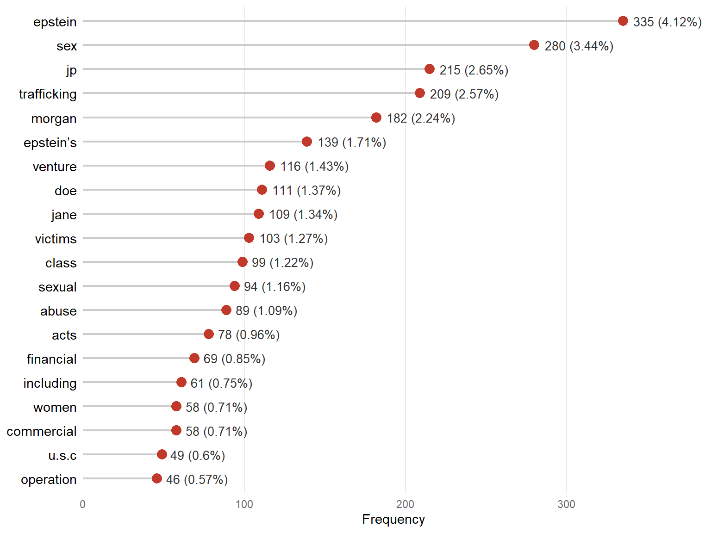
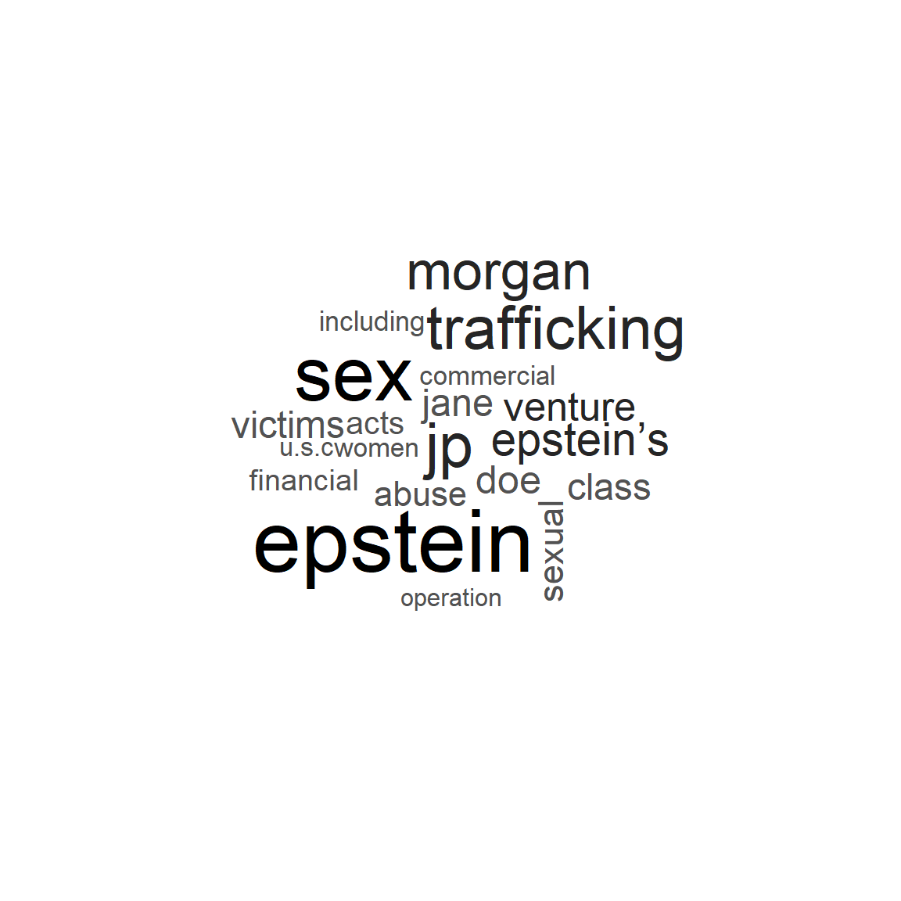
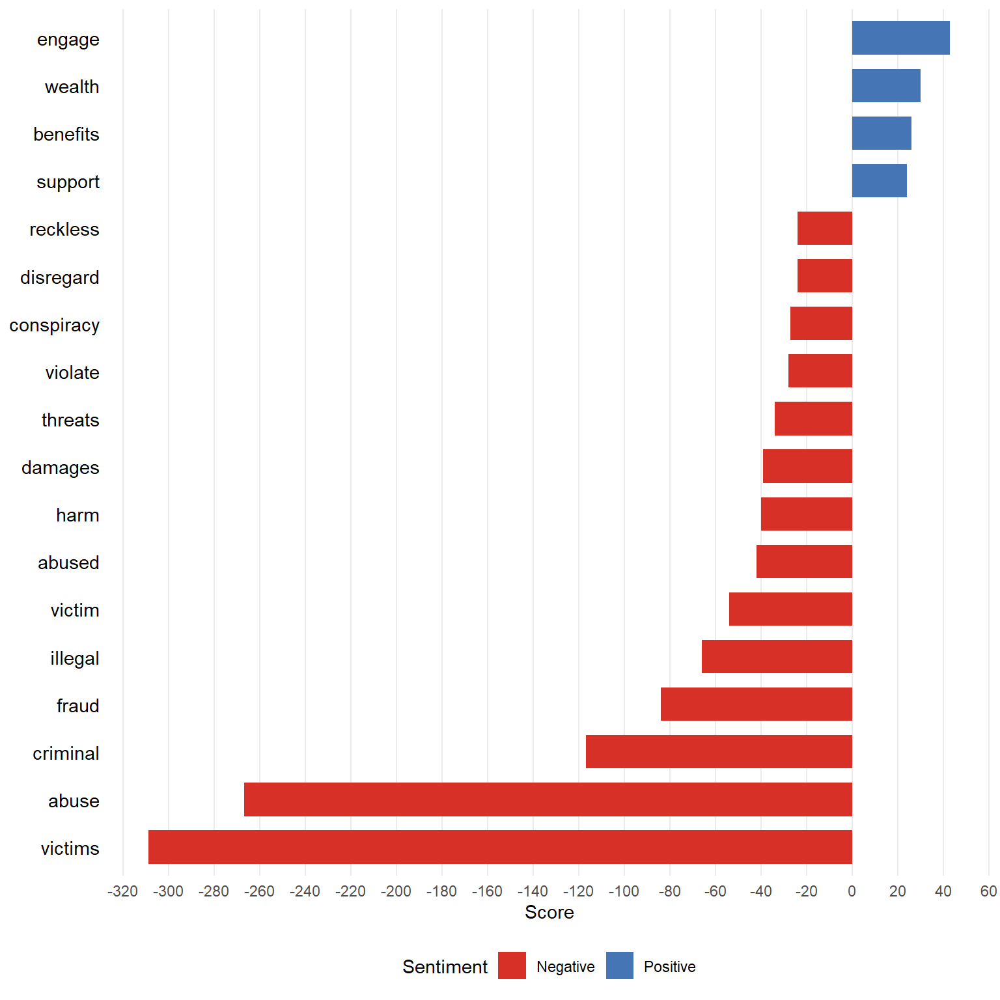
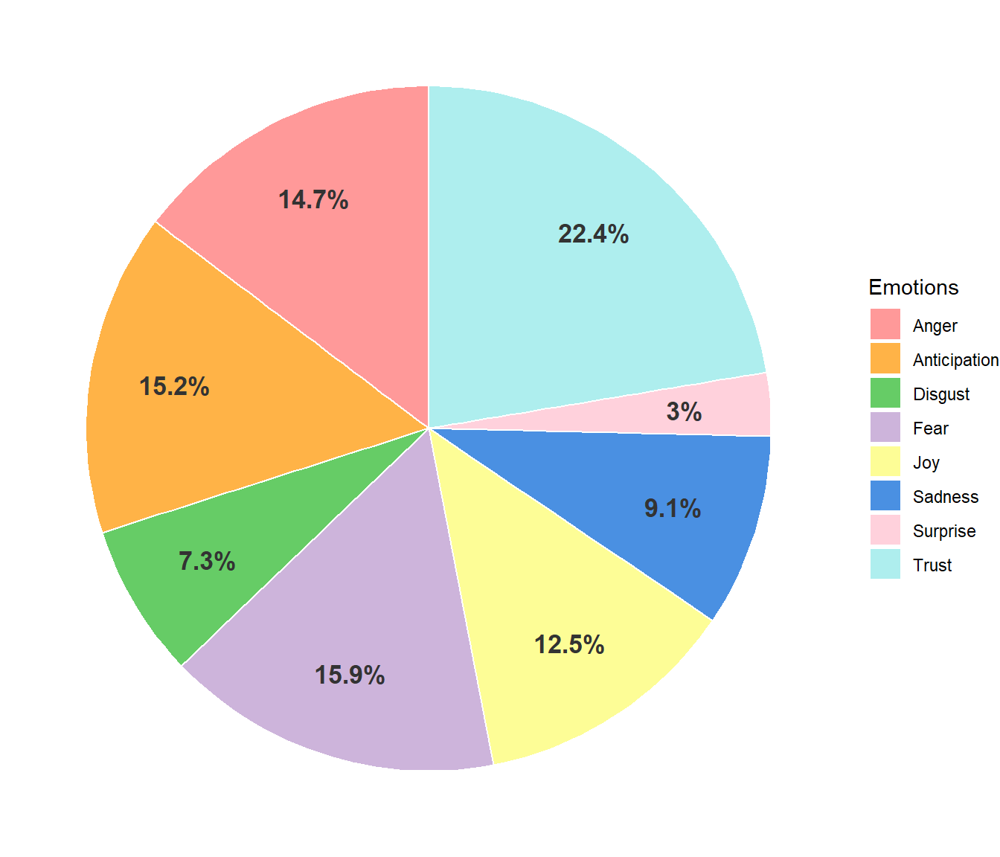
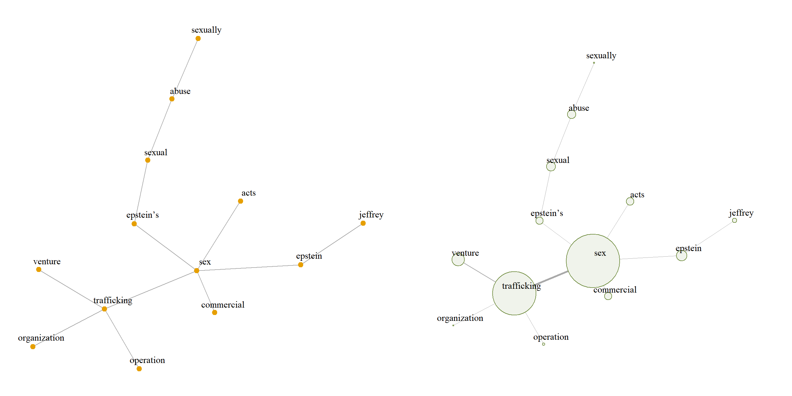
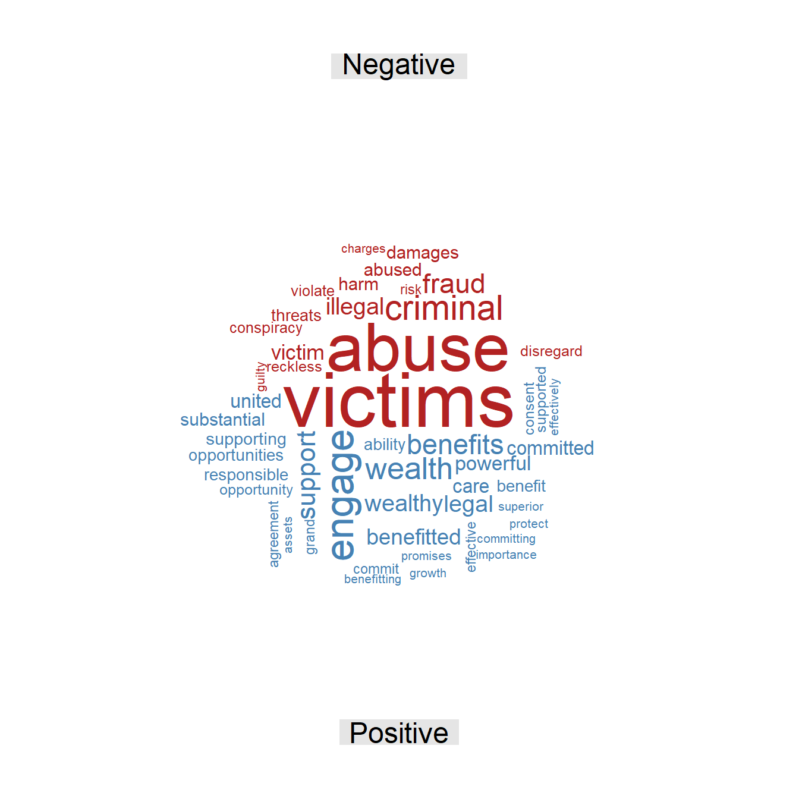
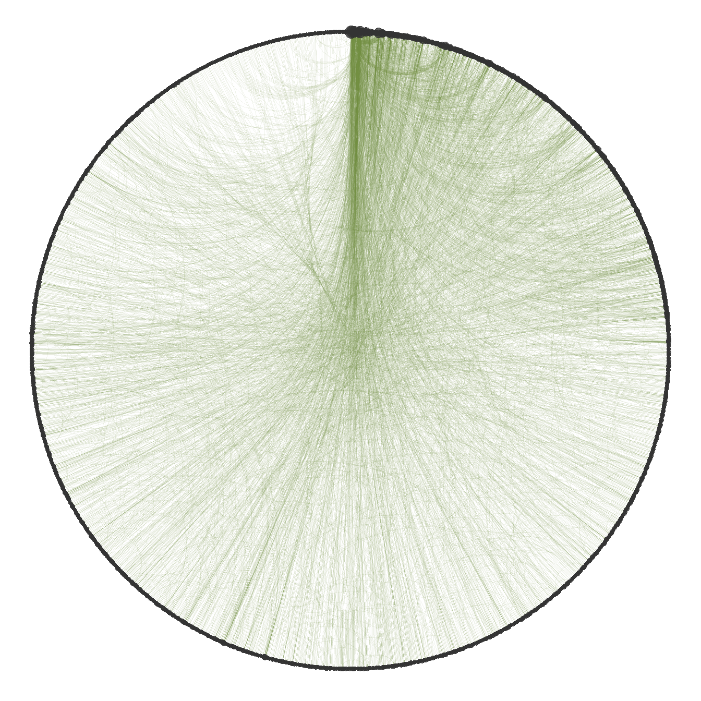
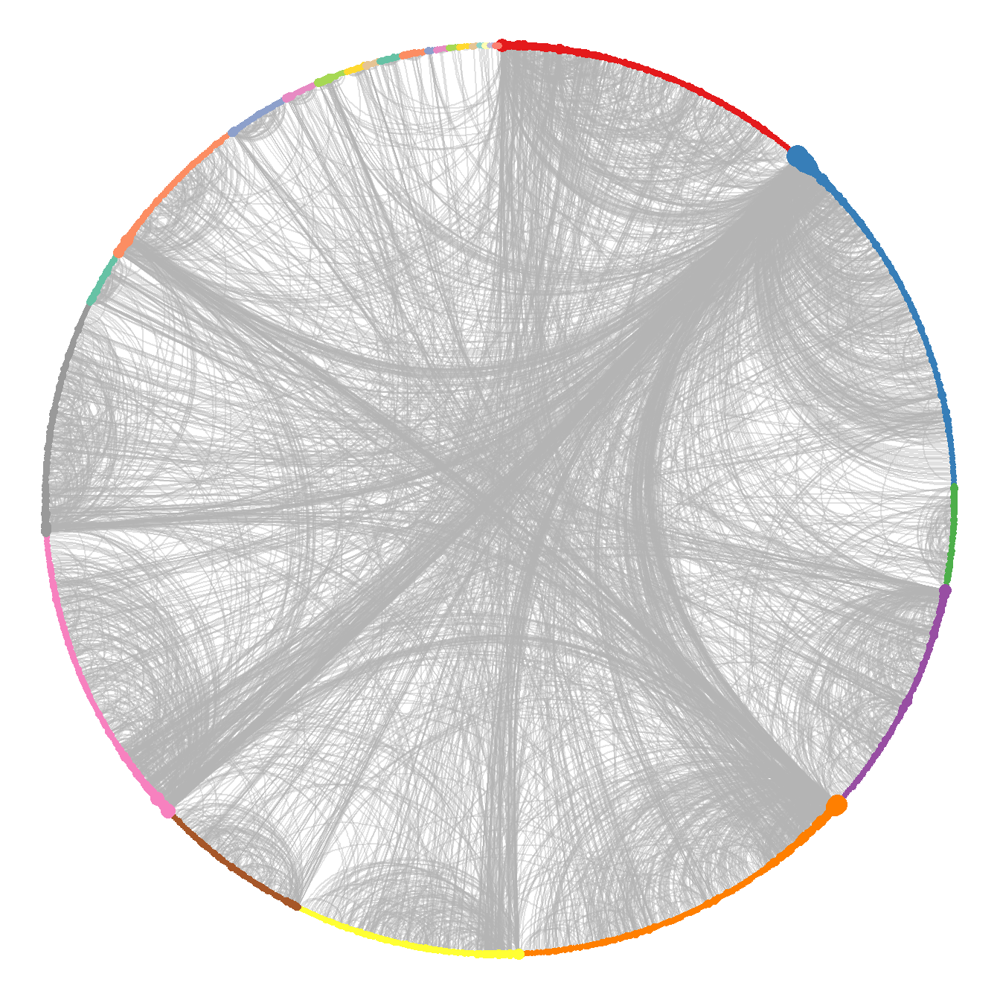

Doe v. JP Morgan
Class-action complaint filed on November 24, 2022
| Document type | Class-action complaint |
| Court | U.S. District Court for the Southern District of New York |
| Case number | 1:22-cv-10019 |
| Source | CourtListener |
| Words (cleaned text) | 16,366 |
This class-action complaint, filed in the U.S. District Court for the Southern District of New York by an anonymous plaintiff, Jane Doe 1 (on her own behalf and on behalf of other women in a similar situation), alleges that JP Morgan Chase & Co. facilitated, participated in, and financially benefited from Jeffrey Epstein’s international sex trafficking network between 1998 and 2013. The complaint alleges that the financial institution deliberately ignored Know Your Customer (KYC) and anti-money laundering rules, allowing massive cash withdrawals that Epstein allegedly used to silence his victims and to pay recruiters. Brought under the federal Trafficking Victims Protection Act (TVPA) and New York’s Adult Survivors Act, the complaint argues that the bank, driven by executives such as Jes Staley, knowingly prioritized profits and its connections with ultra-high-net-worth clients over compliance with the law, thus providing the financial infrastructure that allowed Epstein’s alleged network of abuse and exploitation to expand.
Word frequency
Figure 1 shows the most frequent terms in the document. The relative frequency shows that none of them stands out from the rest; “Epstein” is the most repeated term, making him one of the most recurrent actors throughout the text, which is striking given that he is neither the defendant nor the plaintiff. Even so, terms such as “JP”, “Morgan”, “Jane”, and “Doe” refer directly to the two parties, who are main actors in the narrative. There are also terms related to the alleged sexual offenses and the parties involved, such as “victims”, “trafficking”, “sex”, “venture”, “abuse”, “sexual”, “operation”, and “commercial”, which refer to the alleged trafficking network, the offenses to which the victims were allegedly subjected, and its characterization as a profitable business.
The word cloud in Figure 2 shows no word that differs from those in the bar chart, which means that there is a significant difference in frequency between the most frequent words and the rest; this suggests that most of the ideas in the text revolve around them. Legal terms also appear, such as “U.S.C.”, the abbreviation of United States Code (the compilation of federal laws), and “class”, which refers to a class action, showing that the document has a solid legal basis.

The frequency analysis shows that Epstein plays a leading role throughout the text, being mentioned even more than the defendant; likewise, given its high frequency, sex trafficking as a business is a fundamental theme that connects the people involved. Finally, the language is formal and legal, from which it can be concluded that the offenses and facts set out in the complaint are presented with a legal basis, giving the case argumentative solidity.
Sentiment analysis
Figure 3 shows that the words “victims” and “abuse” stand out disproportionately, and they strongly characterize the overall tone of the text. In addition, there are terms related to the experiences of those affected, such as “harm”, “abused”, “damages”, and “threats”, which refer directly to their experiences and to the consequences of the alleged criminal scheme. Finally, terms linked to the unlawful conduct attributed to the financial institution stand out, such as “fraud”, “disregard”, “reckless”, and “conspiracy”; this suggests that, according to the complaint, the bank was fully aware of the offenses at issue and remained indifferent to the situation. This negative profile is very similar to that of Doe v. Deutsche Bank, a parallel complaint filed on the same day.

By contrast, positive sentiment has few terms, with very low scores compared with those of negative sentiment. The main terms are “wealth”, “engage”, “benefits”, and “support”; however, in this particular context they do not have a directly positive meaning. These terms are used to describe the dynamics of the alleged sex trafficking network: how the victims were recruited, how they were coerced through money and social power, and how, according to the complaint, the bank sustained this structure by granting benefits and directly supporting Epstein in the financial sphere.

Figure 4 shows the dominant emotions in the text. The emotion that stands out from the rest is trust, which is due to the many mentions of institutions and to the use of legal language that evokes this sense of security. Negative emotions such as anger, fear, sadness, and disgust also stand out, to a lesser extent, and are directly related to the accounts of abuse that evoke them. Finally, it is striking that joy reaches 12.5%, a high figure for this type of setting, where the events narrated are crude and grim; as in other filings, this is likely due to terms such as “wealth” and “benefits”, which the lexicon classifies as positive out of context.
The sentiment analysis shows that the predominant tone of the text is negative; this is due to the repeated appearance of words with a high negative charge, together with the absence of a genuine positive sentiment, since the terms that make it up do not necessarily have a positive connotation in this context. Emotions with a strongly negative connotation are also present, which confirms that the overall sentiment of the text is adverse. Finally, legal language is widely used, which gives the text a solid legal and criminal argumentation when setting out the facts and arguments.
Word relationships
The bigram network was built from the bigrams with a frequency of at least 11, in order to obtain an informative network rather than a noisy one, thus keeping the most relevant information in the text. The analysis uses the largest connected component of the graph, since it concentrates the most relevant information.

Figure 5 shows that the vertices with the highest strength are “sex” and “trafficking”, and the edge connecting them has the highest weight; this indicates that the whole document is organized around this offense, which connects the victims with the bank through Epstein. The word “trafficking” is also related to terms such as “operation”, “organization”, or “venture”, which confirms its characterization as an unlawful business and the existence of an underlying structure that, according to the complaint, made the offenses possible. Among the key vertices are also those referring to Epstein, linking him to the alleged sexual abuse and to the alleged trafficking business.
The connected component of the bigram network identifies the nature of the operation allegedly run by Epstein, making it clear that, according to the complaint, it functioned as a profitable business in which the financial institution was paid for its participation. Notably, the only person appearing in this component is Epstein, and there are no vertices referring to the plaintiff or to the defendant. It can therefore be concluded that Epstein is one of the central axes of the text, the link through which both actors and actions are connected, even though he is not a defendant.
The skipgram network is built with all pairs, regardless of their frequency, which makes it possible to find semantic relationships that are not perceptible at first sight. The largest connected component is also used, since it contains the most important information and allows the computation of statistics that are not defined on a disconnected graph, such as the mean distance between vertices.
| Word 1 | Word 2 | Freq. | Rel. freq. |
|---|---|---|---|
| Sex | Trafficking | 189 | 2.43% |
| JP | Morgan | 182 | 2.34% |
| Jane | Doe | 109 | 1.40% |
| Trafficking | Venture | 92 | 1.18% |
| Sex | Venture | 91 | 1.17% |
| Sex | Acts | 56 | 0.72% |
| Commercial | Sex | 55 | 0.71% |
| Sexual | Abuse | 51 | 0.66% |
| Commercial | Acts | 49 | 0.63% |
| Epstein’s | Sex | 49 | 0.63% |
Table 1 shows the most frequent skipgrams. Regarding the relative frequency, no combination stands out disproportionately compared with the others. The three most frequent pairs are those that mention the plaintiff, the defendant, and the offense of sex trafficking, around which the facts and arguments of the text are organized. There are also pairs of words referring to the offense of human trafficking, to its operation as a business, and to the type of abuse allegedly committed within it. Finally, Epstein is not mentioned directly among these pairs; instead, the reference is to what is attributed to him, in this case “Epstein’s sex” trafficking network.
| Statistic | Value |
|---|---|
| Mean distance | 4.35 |
| Mean degree | 5.48 |
| SD of degree | 11.93 |
| Clique number | 8.00 |
| Density | 0.00 |
| Transitivity | 0.07 |
| Assortativity | -0.11 |
| Word | Centrality |
|---|---|
| Sex | 1.00 |
| Trafficking | 0.93 |
| Venture | 0.61 |
| Epstein | 0.36 |
| Epstein’s | 0.31 |
| Acts | 0.24 |
| Commercial | 0.23 |
| JP | 0.21 |
| Morgan | 0.17 |
| Abuse | 0.14 |
Table 2 shows that the mean distance of the network is 4.35; that is, on average, slightly more than four steps are needed to go from one word to another. Being a moderate value, it suggests a less centralized narrative, in which the different concepts and actors are connected more gradually throughout the text. This interconnection is supported by the mean degree of 5.48, meaning that each word is directly connected to between five and six different terms on average. However, the standard deviation of the degree is very high (11.93) compared with its mean, which reveals great variability: a few words are connected to many others, while most have very few connections. In other words, there are hub words that appear next to many different terms, which points to very marked themes in the text.
Regarding the grouping of words, the clique number is 8, meaning that the largest group of words that are all connected to each other has 8 terms; such a structure usually reflects a frequently repeated central argument or words that always appear together. At the global level, however, the density of the network is close to 0 (it rounds to 0.00), meaning that well under 1% of all possible connections are present; the network is therefore very sparse, as is usual in word networks with a large and varied vocabulary. Consistently with this sparsity, the transitivity is 0.07, so there is only a 7% probability that two words connected to the same term are also connected to each other (forming triangles), which reflects a structure with low cohesion. Finally, the degree assortativity is negative (-0.11), indicating a mild tendency of highly connected words to link with words that have few connections, rather than with other central words.
Table 3 shows the most important words. Notably, the first two vertices, “sex” and “trafficking”, have values far removed from the rest. This suggests that this offense is the basis of the document and that both the actors and the themes revolve around it. Words linking this offense to a profitable activity also appear, such as “venture” and “commercial”, which reinforces the idea that one of the central axes of the text is the framing of the offense as a business model. Finally, terms referring to the bank and to Epstein also stand out, making them key actors in the narrative.
| Cluster | Size | Word | Strength |
|---|---|---|---|
| 1 | 180 | Victims | 156 |
| Cash | 69 | ||
| Act | 55 | ||
| 2 | 209 | Sex | 744 |
| Epstein | 569 | ||
| Trafficking | 567 | ||
| 4 | 135 | Financial | 141 |
| Institution | 45 | ||
| Banking | 39 | ||
| 5 | 201 | JP | 530 |
| Morgan | 414 | ||
| Morgan’s | 86 | ||
| 8 | 172 | Jane | 236 |
| Doe | 192 | ||
| Plaintiff | 96 |
Table 4 presents the words with the highest strength in the five largest clusters obtained with the fast greedy algorithm. Cluster 1 refers to the alleged methods of recruiting and coercing the victims through cash payments, while cluster 2 shows a direct relationship with the alleged sex trafficking network and its alleged mastermind, Epstein, and is one of the central themes given the high strength of its vertices. Cluster 4 groups financial terms linked to banking institutions, associated with the bank’s alleged operations related to the unlawful activities. Cluster 5 refers directly to the institution and to its possessions, highlighting its relevance and economic status in the narrative. Finally, cluster 8 is closely related to the plaintiff, grouping everything related to her, such as the alleged abuse, the harm, and her experiences.
Additional figures


